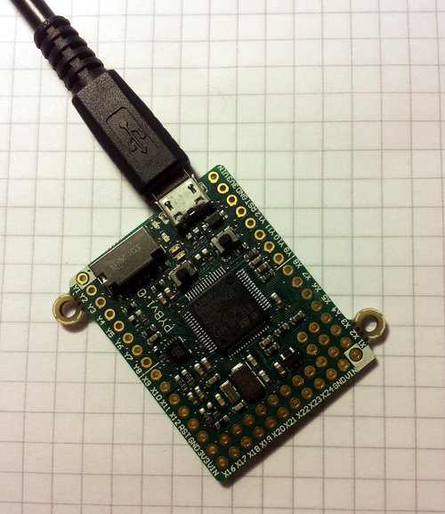

2. Running your first script¶
Let’s jump right in and get a Python script running on the pyboard. After all, that’s what it’s all about!
2.1. Connecting your pyboard¶
Connect your pyboard to your PC (Windows, Mac or Linux) with a micro USB cable. There is only one way that the cable will connect, so you can’t get it wrong.
When the pyboard is connected to your PC it will power on and enter the start up process (the boot process). The green LED should light up for half a second or less, and when it turns off it means the boot process has completed.
2.2. Opening the pyboard USB drive¶
Your PC should now recognise the pyboard. It depends on the type of PC you have as to what happens next:
Windows: Your pyboard will appear as a removable USB flash drive. Windows may automatically pop-up a window, or you may need to go there using Explorer.
Windows will also see that the pyboard has a serial device, and it will try to automatically configure this device. If it does, cancel the process. We will get the serial device working in the next tutorial.
Mac: Your pyboard will appear on the desktop as a removable disc. It will probably be called
PYBFLASH. Click on it to open the pyboard folder.Linux: Your pyboard will appear as a removable medium. On Ubuntu it will mount automatically and pop-up a window with the pyboard folder. On other Linux distributions, the pyboard may be mounted automatically, or you may need to do it manually. At a terminal command line, type
lsblkto see a list of connected drives, and thenmount /dev/sdb1(replacesdb1with the appropriate device). You may need to be root to do this.
Okay, so you should now have the pyboard connected as a USB flash drive, and a window (or command line) should be showing the files on the pyboard drive.
The drive you are looking at is known as /flash by the pyboard, and should contain
the following 4 files:
- boot.py – the various configuration options for the pyboard.
It is executed when the pyboard boots up.
- main.py – the Python program to be run.
It is executed after
boot.py.
- README.txt – basic information about getting started with the pyboard.
This provides pointers for new users and can be safely deleted.
- pybcdc.inf – the Windows driver file to configure the serial USB device.
More about this in the next tutorial.
2.3. Editing main.py¶
Now we are going to write our Python program, so open the main.py
file in a text editor. On Windows you can use notepad, or any other editor.
On Mac and Linux, use your favourite text editor. With the file open you will
see it contains 1 line:
# main.py -- put your code here!
This line starts with a # character, which means that it is a comment. Such lines will not do anything, and are there for you to write notes about your program.
Let’s add 2 lines to this main.py file, to make it look like this:
# main.py -- put your code here!
import pyb
pyb.LED(4).on()
The first line we wrote says that we want to use the pyb module.
This module contains all the functions and classes to control the features
of the pyboard.
The second line that we wrote turns the blue LED on: it first gets the LED
class from the pyb module, creates LED number 4 (the blue LED), and then
turns it on.
2.4. Resetting the pyboard¶
To run this little script, you need to first save and close the main.py file,
and then eject (or unmount) the pyboard USB drive. Do this like you would a
normal USB flash drive.
When the drive is safely ejected/unmounted you can get to the fun part: press the RST switch on the pyboard to reset and run your script. The RST switch is the small black button just below the USB connector on the board, on the right edge.
When you press RST the green LED will flash quickly, and then the blue LED should turn on and stay on.
Congratulations! You have written and run your very first MicroPython program!